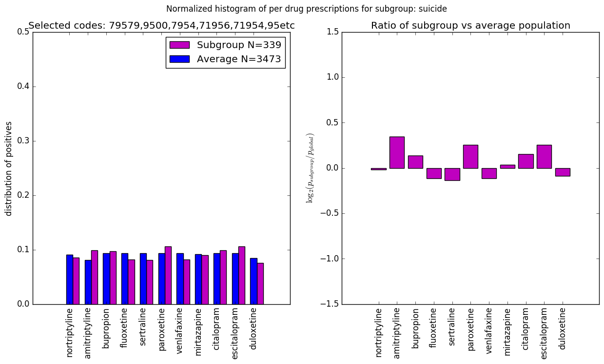

TYPE = logistic_regression_l1_quantile_0.75
LABEL = suicide
SRCFILE: db=stability_20180713-type=logistic_regression_l1_quantile_0.75-label=suicide-codes=79579,9500,7954,71956,71954,95etc.png
CODE DESCRIPTION
79579 other_and_unspecified_nonspecific_immunological_findings_79579
9500 suicide_and_self-inflicted_poisoning_by_analgesics,_antipyretics,_and_antirheumatics_e9500
7954 other_nonspecific_abnormal_histological_findings_7954
71956 stiffness_of_joint,_not_elsewhere_classified,_involving_lower_leg_71956
71954 stiffness_of_joint,_not_elsewhere_classified,_involving_hand_71954
956 suicide_and_self-inflicted_injury_by_cutting_and_piercing_instrument_e956
79505 cervical_high_risk_human_papillomavirus_(hpv)_dna_test_positive_79505
29505 application_of_long_leg_splint_(thigh_to_ankle_or_toes)_c29505
29520 catatonic_type_schizophrenia,_unspecified_state_29520
29500 simple_type_schizophrenia,_unspecified_state_29500
69589 other_specified_erythematous_conditions_69589
9509 suicide_and_self-inflicted_poisoning_by_other_and_unspecified_solid_and_liquid_substances_e9509
99520 unspecified_adverse_effect_of_unspecified_drug,_medicinal_and_biological_substance_99520
29580 other_specified_types_of_schizophrenia,_unspecified_state_29580
79504 papanicolaou_smear_of_cervix_with_high_grade_squamous_intraepithelial___lesion_(hgsil)_79504
9503 suicide_and_self-inflicted_poisoning_by_tranquilizers_and_other_psychotropic_agents_e9503
49505 repair_initial_inguinal_hernia,_age_5_years_or_over;_reducible_c49505
79500 nonspecific_abnormal_pap_smear_of_cervix,_unspecified_79500
79501 atypical_squamous_cell_changes_of_undetermined_significance_favor_benign_(ascus_favor_benign)_79501
79502 atypical_squamous_cell_changes_of_undetermined_significance_favor_dysplasia_(ascus_favor_dysplasia)_79502
79503 papanicolaou_smear_of_cervix_with_low_grade_squamous_intraepithelial__lesion_(lgsil)_79503
9583 posttraumatic_wound_infection_not_elsewhere_classified_9583
49585 repair_umbilical_hernia,_age_5_years_or_over;_reducible_c49585
9504 suicide_and_self-inflicted_poisoning_by_other_specified_drugs_and_medicinal_substances_e9504
9588 other_early_complications_of_trauma_9588
9589 suicide_and_self-inflicted_injury_by_unspecified_means_e9589
6954 lupus_erythematosus_6954
29550 latent_schizophrenia,_unspecified_state_29550
29530 paranoid_type_schizophrenia,_unspecified_state_29530
99580 adult_maltreatment,_unspecified_99580
99581 adult_physical_abuse_99581
29570 schizo-affective_type_schizophrenia,_unspecified_state_29570
9505 suicide_and_self-inflicted_poisoning_by_unspecified_drug_or_medicinal_substance_e9505
79551 nonspecific_reaction_to_tuberculin_skin_test_without_active_tuberculosis_79551
9551 injury_to_median_nerve_9551
79509 other_nonspecific_abnormal_pap_smear_of_cervix_79509
